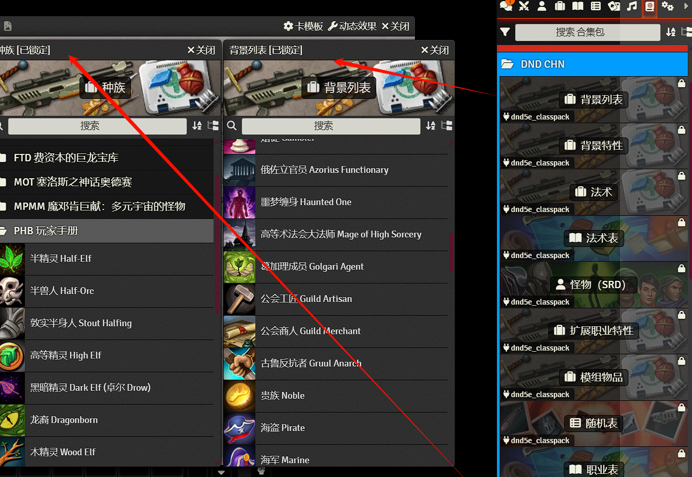
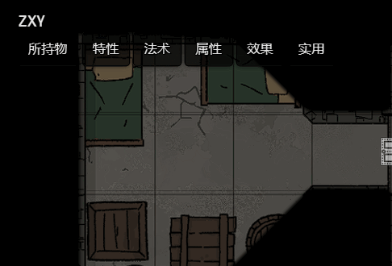
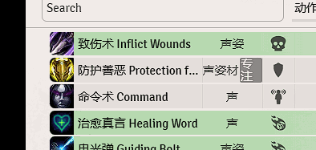
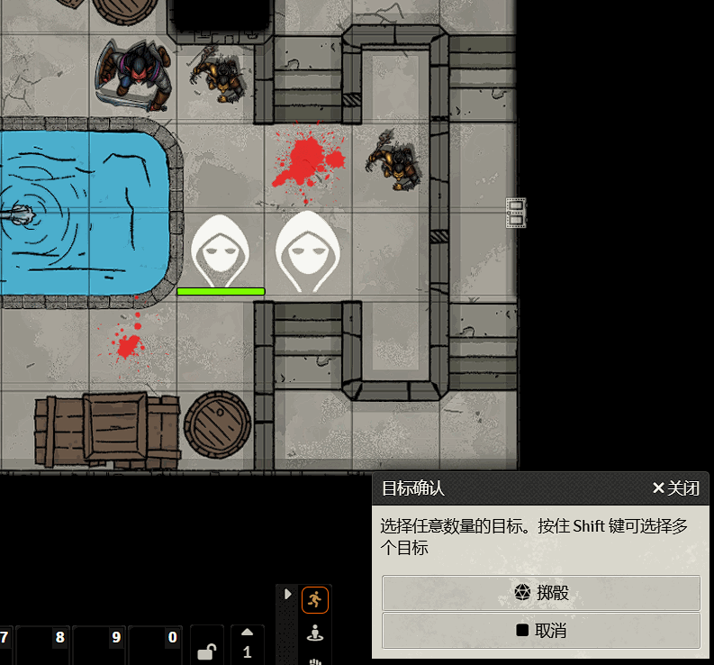
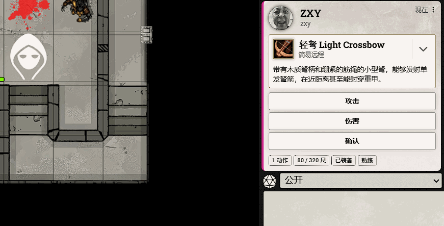

基础功能介绍——玩家篇
作为一名玩家，你只需要点开DM给你的网址，选择自己的用户，输入密码就可以使用了。 下面是一些常用的基础功能的教学。
加入游戏
在打开网址后若没有有效的登录凭据则会来到这个界面。 根据DM的配置这个界面的外观可能会有所不同，但都应有用户选择栏和密码输入框。 根据DM给你的指示选择正确的用户并输入密码即可加入。
界面介绍
上面是加入后的界面。接下来将会对各个部分分别介绍。
功能区
功能区是主要进行投掷等交互的区域。各个功能如下图所示。
聊天信息
这里是用来进行聊天与投掷的界面。你可以在下方的框内输入聊天信息、或投掷指令 ，抑或是点击聊天中的卡片来进行一些操作。
可以通过点击聊天框上方的“公开”切换掷骰模式。
你可以通过最下方的一排控件投掷。点击对应的骰子可以添加，右键移除。

点击聊天框上方的“公开”旁的骰子按钮可以打开掷骰计算器。具体功能这里不再赘述。

战斗遭遇
在这里可以看到当前战斗遭遇的先攻板。
角色
这里存放着你的所有可用角色。通过双击可以进行修改。
物品、日志条目、随机表、牌堆、播放清单
这些功能并不是很常用。故这里不作描述。
合集包
这里存放着许多内置好的东西，包括种族、职业、法术、物品等。一般来说，想要找东西的话都会来这里找。
点击分类可以查看其中的条目，点击条目可以查看详细描述。
法术 | 物品 |
设置
在这里可以查看并修改一些配置信息。一些常用的配置将会在下文介绍。
操作控件
这里介绍一些常用的控件。
选择指示物
你可以用此工具选择你可控制的指示物，并移动、旋转等。双击指示物可以打开角色卡。具体操作见上图。
选择目标
你可以用此工具选择攻击、法术等的目标。具体操作见上图。
测量距离
你可以用此工具测量两点间的距离。具体操作见上图。
测量范围
你可以用这些工具测量一定形状的范围，在决定法术作用范围时可能会有用。具体操作见上图。
快捷栏
你可以在这里便捷的使用自己角色的装备、法术、特性等。
参与游戏
车卡
在与DM沟通后，其会给你分配一个可用的角色。你可以按照自己的角色修改。
设定属性
将你的原始属性（最开始骰值）输入到上方的属性中。 或者，你也可以在最后再将属性按照已有的角色卡覆写。
决定种族、背景
打开
特性；打开侧边栏的
合集包中的对应列表； 决定好之后，将所需的拖入角色卡，并按照引导填写信息即可。
决定职业
同上，拖入要的职业到角色卡，跟随引导即可。
若要兼职，可以拖入多个职业。职业等级可在职业旁设定。
添加物品、法术
分别打开
所持物、法术书栏，按照上面的步骤操作即可。若有施法能力，别忘了在法术书下方设置施法属性。
调整特性
前往属性界面，确定你的角色的熟练项、语言等。
补全人物信息
在
传记中设置人物的人设。在最上方给角色起个名字。
若要改变角色头像，请将图片发给DM设置。
管理角色
你可以对自己的角色进行管理。
装备物品
在 所持物 中右键物品点击装备，或是点击旁边的按钮。
准备法术
类似于装备物品，在 法术书 中右键点击准备，或点击旁边的按钮即可。
休息
将鼠标放到下面的图标上并选择类型，或是在快捷栏选择。
使用生命骰
点击下面的图标即可打开使用生命骰窗口。
移动
若你已创建好角色，就可以让DM将你的Token（指示物）放在画布了。
通过拖动你的角色，或使用方向键，你可以在画布上移动你的角色的Token（指示物）
你的视野和你的指示物能看到的视野是同步的。
通过点击门的图标，可以开关门。
攻击、施法
通过点击快捷栏的相应物品和法术，你可以进行武器攻击或施法。 这里以最普通的攻击检定为例。
选择物品
你可以在角色卡中点击物品左侧的图标，或是在快捷栏点击来使用。
  选择目标
在点击后，会弹出
目标确认对话框。这时你可以通过点击或框选来选择一定数量的目标。 在对话框中右键选择的目标可以取消选中。之后点击掷骰按钮。 进行检定
确认完成后，在右侧聊天栏中将会出现对应卡片，进行相关投掷即可。 若为攻击检定，DM会判断是否命中并对目标造成你骰的伤害或效果。

设定
这里是一些可能会有用的设定。其它设定可以自行调整。
调节画质
启用目标确认
如图设置即可